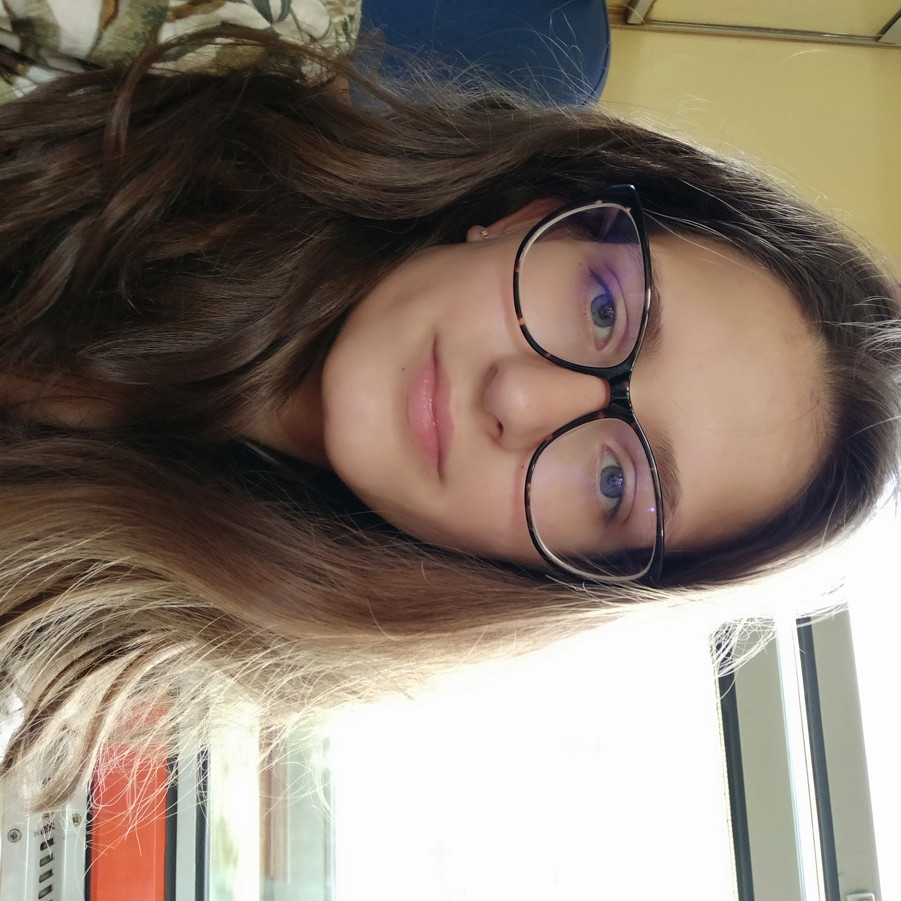

Birth year: 2004
Contacts:
Az iskola alatt nem vállalnék munkát egy ideig, mivel szeretem, hogy van időm magamra és másokra, de ha lenne görkorcsolyás festő állás arra rögtön jelentkeznék. Gondolkodtam, hogy nyáron elmegyek dolgozni valahova, de miután körülnéztem a lehetőségek között rájöttem, hogy nem nekem való a diákmunka.
Annyira sok mindent szeretek csinálni, hogy még nem nagyon tudom, hogy merre orientálódjak. Abban biztos vagyok, hogy becsületes állást szeretnék a jövőben.
Jelenlegi céljaim inkább a közeljövőre terjednek ki. Szeretnék fejlődni, mint írásban, mint görkorcsolyában, mint a karantén után úszásban, mint programozásban, és a hasonló dolgokban. Viszont egy nagyobb célom a felsőfokú angol vizsga, illetve szeretnék újra németet tanulni.
Még nem vagyok jártas a cégek világában, viszont a logischool-nál szerintem dolgozni fogok egy kis ideig, ha lesz rá lehetőségem.
Szeretném elérni, hogy egy olyan környezetben éljek majd, ahol jól érzem magam és nem kell dolgoznom, ahhoz hogy megéljek. Egyébként nekem az lenne az álommelóm, ha a reneszánsz korban pali lennék, és Giotto di Bondone-től tanulhatnék és festhetnék óriási freskósorozatokat.